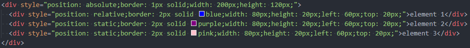

參考 http://jendo.org/files/doc/div.html 所作之測試筆記，僅包含第一段有關 postion 的內容。
左：box1 = default(static); box2 = default(static)
中：box1 = relative; box2 = absolute
box 2 設定為 absolute，代表其畫面位置參考的是 box1 的邊界，因此 element 2 的 top: 25px 是指從 box1 的頂部到 element 2 的頂部有 25px 的空間，left: 20px 是指從 box1 的左邊到 element 2 的左邊有 20px 的空間。
也就是 element 2 是從 element 1 的位置再往下移 25px、往右移 20px。
右：box1 = relative; box2 = relative
box 2 設定為 relative，代表其畫面位置參考的是該物件原本的位置，因此 element 2 的 top: 25px 是指從原本位置的頂部到element 2 的頂部有 25px 的空間，left: 20px 是指從原本位置的左邊到element 2 的左邊有 20px 的空間。
也就是 element 2 是從左邊例子的 element 2 再往下移 25px、往右移 20px。
左：box1 = default(static); box2 = default(static)
中：box1 = absolute; box2 - element 1 = absolute; box - element 2 & 3 = static
在使用預設=static(如左)之下，box2 的三個 element 是從上至下依序排列，若將 element 1 的 position 改為 absolute，且設定 left: 60px; top: 20px，則剩下的 element 2 & 3 會自動遞補 element 1 騰出的位置。
右：box1 = absolute; box2 - element 1 = relatvive; box - element 2 & 3 = static
與中間的例子差異在於，box2 的 element 1 設定為 relative，剩下的 element 2 & 3 不會自動遞補 element 1 騰出的位置，而是將其位置保留空出。

參考上方連結的章節 -- 從顯示流程中去除 -- 的實作。
P.S. 當 element 設定 position: static 時，設定 top, right, bottom, left 皆會被自動忽略。
P.S.2 在中間與右邊的例子，element 1 設定 absolute 還是 relative 位置都相同，是因為計算基準點相同。
box1 = relative; box2 = fixed
element 2 設定為 fixed 且指定位置(top, left)，代表其畫面位置參考的是螢幕視窗最大可視範圍邊界，因此 element 2 的位置是從整個頁面的左上角開始算，且不因頁面捲動而跟著移動，會永遠停留在該位置(即為左上方紫框的 element 2)。
element 1 設定為 fixed 且不指定位置，通常會顯示在其原本的位置，在 w3schools 的例子可以顯示此種結果，但在此範例中測試不出效果，待解。
同樣程式碼於 w3schools 實現之效果如下圖
HTML Exercise 05: Secret Message
頁面關鍵內容由兩部分組成：1) 上半部固定的訊息，以下簡寫為 top_info，2) 下半部隨著頁面捲動而浮上來的訊息，以下簡寫為 bottom_info。
top_info：設定 position: fixed，使得畫面捲動時此訊息始終停留在可視畫面的固定位置。
bottom_info：設定 position: absolute 讓該區塊可以自由移動，並設定 top: 2500px 使得整個區塊在頁面較為下方的區域，中間空出的區域觸發頁面捲動。